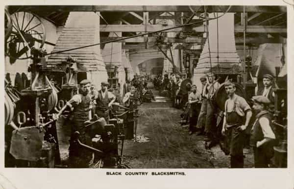
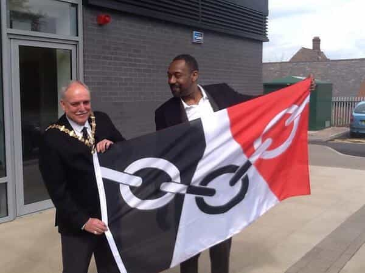

< < < Back
Race-Baiting British Marxist Attacks Little Girl’s Design Of Regional Flag As Racist – Return Of Kings
A self-exalted “racism campaigner” has attacked a 12-year-old girl’s design of the flag of the Black Country, a region in the West Midlands of England. Patrick Vernon, who, like the useless feminist SJW Caroline Criado-Perez I recently wrote about, holds the Order of the British Empire, called the design “offensive and insensitive” and complained that the chain motif of the flag is improper because shackles made by Black Country forgers were used to incarcerate slaves in North America.
Luckily, the comments by the self-acclaimed “social commentator and political activist” have been roundly, and refreshingly, dismissed as “political correctness garbage” by local politicians.
The Black Country—an industrial powerhouse
Black Country Blacksmiths, who toiled to build a country wealthy enough for soft, doughy liberals like Patrick Vernon to sit around complaining and call it a career.
The Black Country is an area of the West Midlands which includes the major towns Walsall and Wolverhampton. During the Industrial Revolution, the Black Country was a major industrial powerhouse, a centre for mining, steel production, and metal casting.
It might surprise those of uncalloused hands, excess free time, and a penchant for zany liberal groupthink to hear that the Black Country is not so called out of a desire to “marginalise” black people. The name comes from the black soot produced by heavy industries that thrived in the area.
The Black Country flag which forms the object of Mr. Vernon’s gripe was designed by Gracie Sheppard, a local schoolgirl, as part of a competition. She took the colour scheme from Elihu Burrit, an olden American Consul to Birmingham, England, who described the region as “black by day and red by night,” in reference to local furnaces billowing smoke during the day and glowing red by night.
The chain running across the flag represent another prominent industry of the region. The anchor and chains of the HMS Titanic, all 100 tons of them, were made in Netherton, in the Black Country. The region still produces chains for the Ministry of Defence. The white symbol in the middle shows a glass cone, another product of local industry.
Dudley Council adopted Gracie’s design as the official Black Country Flag, and it was flown on Monday, which was the celebration of Black Country day across the region. Industry past and present is a deep source of pride for the Black Country, which saw the production of the first successful steam engine, invented by Thomas Newcomen in 1712.
Another professional grievance-monger
“Social commentator and political activist” Mr Vernon piped in with his comments just a day before Black Country Day. He said the use of chain as a symbol was “insensitive,” adding that: “Shackles and manacles… made by chainmakers in the Black Country were used to incarcerate slaves in North America, on plantations and in colonial Africa.” He berated the entire region, saying: “the Black Country has never done anything to acknowledge that slavery was key to its economic rise”
The former Labour councillor (for Hackney in East London, mind you, not a ward anywhere in the West Midlands) launched into full on Marxist babble, continuing: “It was not just the slaves who were oppressed by chainmaking, there was the women – the white slaves of Cradley Heath – and the working classes who were oppressed by the rich foundry owners. The chain is a symbol of their oppression too.”
Social Justice bullying fails again
TV star Lenny Henry, who has previously complained that there are not enough black people on TV, has no problem with the Black Country flag.
Fortunately, Vernon’s comments were roundly rejected by local politicians of all stripes.
West Midlands UKIP MEP Bill Etheridge, dismissed the comments in the strongest possible terms, saying:
This is political correctness garbage. The chains represent the chains built for the Titanic and in that spirit, Mr. Vernon’s comments should be condemned to the bottom of the ocean.
Conservative MP for Dudley South, Mike Wood added:
While we need to be sensitive, we should not be trying to re-write history. Chainmaking is part of our identity and industrial heritage. It is a history we should be proud of, not one we should be running away from.
Even Labour’s MP for Dudley North, Ian Austin gave the comments short shrift:
This is ridiculous nonsense. The Black Country Festival brings everyone from our diverse communities together. If he had come to Stone Street Square this weekend he would have seen people off all races and backgrounds enjoying the fun. It was an example of what makes our society something to celebrate.
The long march of the loony left
Tapping on a MacBook it isn’t.
The “Loony Left” was a theme that arose during the 1987 British general election, and was a description of certain aspects of Labour politics. The theme was that Labour’s local government authorities were either irrationally obsessed with minority and fringe issues, or paranoid about imaginary racial and sexual issues.
The pejorative label arose from stories such as the 2000 banning of the nursery rhyme Baa Baa Black Sheep by Birmingham City Council on the grounds that it was racially offensive to black people. The ban was rescinded after outraged families complained.
Patrick Vernon may or may not be a pure race huckster in the mould of shit-stirring “Reverend” Al Sharpton, or our very own “race relations activist” Lee Jasper on this side of the pond. Vernon is said to have done good work in the field of mental health. By making his ill-advised comments about the Black Country Flag, however, Vernon is carrying the mantle of the Loony Left into the modern age of the “callout culture” Social Justice Warrior.
Working class British people have very little left they are allowed to be proud of. Emily Thornberry, a lawyer and Labour politician, was shadow Attorney General in the Labour opposition until last year until she had to step down over mocking, sneering tweets of a man who had hung the flag of St George from his windows.
The hummus and halloumi eating liberal elite of Islington hold a special sort of sneering contempt for any common English people who might still hold some attachment to tradition, or the past. Thornberry is not an isolated incident either. In 2013 a rural council voted to stop flying the flag of St George because a Labour councillor insisted it could cause Muslims to become upset.
Common people can no longer make any expressions of pride or joy outside the narrow compass of What Is Permitted, without some officious busybody piling in to make a point about alleged historical wrongs.
Patrick Vernon is, in essence, such an officious busybody, a Cultural Marxist SJW acting in identical vein. He no doubt would have rejoiced at the banning of the flag, just as feminists creamed their Aunt Jemima pantaloons at the banning of the Beach Body Ready adverts.
For the lunatics congregating under the flag of social justice, every success at banning even the most innocuous thing is a cause for orgasmic celebration, because under the surface, it is just one more step in what Italian Marxist Antonio Gramsci called the “long march through the institutions.”
Fortunately, the people and the press of the Black Country have read the issue of the Black Country Flag with utter clarity, and told the Social Justice berk to get on his bike. Let’s hope this is a template reaction to all future attempts by the grievance mongers to guilt trip the majority.
Read Next: Critical Race Theory Is Repackaged Narcissism


{kind=link}
{kind=link}
{kind=link}
{kind=link}
{kind=link}